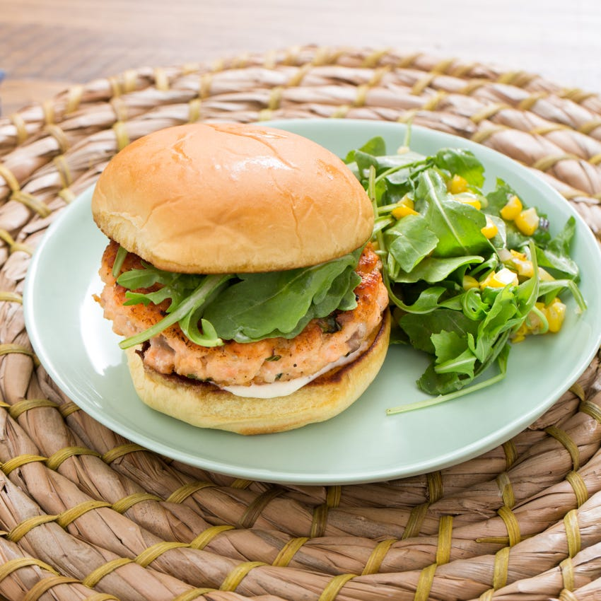

Salmon Burgers with Garlic Aoili

Salmon burger recipe with garlic aioli. Combined from Blue Apron and Marley Spoon.
Ingredients
- 1 lb of skinless salmon fillet
- brioche buns
- 1 shallot
- 1 egg
- 1 lemon
- 1 bunch of dill
- 2 tbsp mayonnaise
- 1-5 cloves of garlic
- 3 oz Panko breadcrumbs
Cooking Instructions
- Pat salmon dry. Place on a microwave-safe plate; cover with plastic wrap. Microwave until salmon is barely opaque and just able to flake, 1–3 minutes (check every 15 seconds after 1 minute as microwaves vary). Remove and discard skin; refrigerate while prepping remaining ingredients.
- Wash and chop half the shallot and all of the dill. Reserve other half of shallot for own use.
- In a large bowl, combine 1 tbsp mayonnaise, breadcrumbs, lemon zest, egg, shallot, 90% of the dill, and as much garlic as desired. Flake the salmon into the bowl and combine gently. Using wet hands, divide the mixture into burger shapes.
- In a nonstick pan, add olive oil and cook burgers about 3-4 minutes per side.
- While the burgers are cooking, mix remaining mayonnaise, dill, and garlic together. Add a dash of olive oil and lemon.
- If desired, toast buns and serve salmon burgers with garlic aoili.